# 라운드 2 — 2026-10-22 12:02 평균 점수(C, 1~5): **3.21** · 비용 $1.326 · 얼굴 잘림 22 | 유형 | 평균 | A 나음 | C 나음 | 같음 | |---|---|---|---|---| | 사진 | 3.10 | 0 | 5 | 0 | | 누끼 | 3.20 | 0 | 5 | 0 | | 오브젝트·일러스트 | 3.33 | 0 | 4 | 1 | AI 상자 결과: rule 39 · free 28 · shrink 22 · ok 18 · grow 13 ## 문제 집계 - kvWeight:too_small 36 - bg:flat 36 - text:low_contrast 20 - crop:awkward 19 - crop:subject_cut 18 - crop:face_cut 6 - bg:seam 5 - kvWeight:too_big 4 - text:overlap 3 ## 케이스별 큰 문제 - **t1014-hanssem**(사진) · C 나음: 1200×600 크롭이 사진 오른쪽 끝에 고정돼 인물이 빠지고 기기만 남음. 초점 영역(두 인물)을 기준으로 크롭하지 않은 것으로 추정 / 세로형(300×1050·300×600)과 1080×1080에서 글자가 지면 대비 너무 작고 빈 공간이 큼. 텍스트 크기를 규격 짧은 변 기준으로만 산정한 탓으로 추정 / 970×250·580×400·300×600에서 카피를 '한샘 채용'으로 줄여 직무 정보가 사라짐. 글자 수 축약 규칙이 핵심 정보를 우선하지 않음. C의 베이지 배경은 사진 벽색과 이어져 A의 진갈색보다 자연스러움 - **hr-doctor**(사진) · C 나음: 작은·세로형 규격(300×1050, 320×100)에서 연회색 텍스트가 밝은 사진 배경 위에 얹혀 읽히지 않는다. 원인 추정: 밝은 배경에 맞춘 회색 텍스트 색을 규격과 무관하게 일괄 적용했다. / 580×400, 1080×1080, 970×250에서 손이 우하단 모서리로 밀려 작아지거나 잘릴 듯하다. 원인 추정: 원본에서 손이 오른쪽 하단에 있는데 우측·하단 정렬 크롭을 그대로 써서 주인공 위치 보정이 없었다. / 1080×1080, 970×250, 300×1050에서 가장자리 그라데이션으로 확장한 영역이 단색처럼 비거나 경계가 보인다. 원인 추정: 원본 비율을 넘는 영역을 단색 그라데이션으로만 메워 전환 구간이 짧다. - **midas-team-photo**(사진) · C 나음: 970×250·580×400·1080×1080에서 사진이 우하단 구석에 고정 앵커로 작게 배치되어 인물 얼굴이 하단에서 잘림. 크롭 기준점이 얼굴/인물 위치를 반영하지 않고 지면 모서리에 맞춰진 것으로 추정됨. / 정사각·세로 장형(1080×1080, 300×1050)에서 사진이 지면을 채우지 못해 넓은 회색 단색 면이 남음. 사진 스케일을 폭 기준으로만 잡아 세로 공간을 활용하지 못한 것으로 보임. / 300×1050·1080×1080의 텍스트 크기가 지면 대비 지나치게 작아 가독성이 떨어짐. 텍스트 스케일이 짧은 변(폭) 기준으로 계산된 탓으로 추정됨. A 대비 배경색 조화와 경계 처리는 C가 확실히 나음. - **t1014-asan-photo**(사진) · C 나음: 가로 와이드 규격(1200×600, 1250×560)에서 사진이 가장자리로 밀려 남색 그라데이션이 지면 대부분을 덮고, 주인공 격인 병원 건물이 빠졌습니다. 원인은 텍스트 안전영역을 과하게 잡아 사진을 축소·우측 정렬한 판단으로 추정됩니다. / 어두운 야경 사진이라 건물이 바탕 남색에 묻힙니다. 크롭 위치가 하늘 쪽에 치우친 데다 노출 보정이 없었던 것으로 보입니다. / 세로형(300×1050)과 정사각형(1080×1080)은 보조 텍스트가 너무 작거나 대비가 낮습니다. 규격별 문구 축약 없이 같은 정보량을 축소 배치한 탓으로 추정됩니다. - **midas-cablebridge**(사진) · C 나음: 대형 가로형(1250×560)과 580×400에서 키비주얼이 구석에 작게 배치돼 지면이 단색으로 비어 보임. 규격별 확대 비율이 부족한 탓으로 보임 / 세로형(300×1050)과 정사각에서 텍스트 스케일이 지면 크기를 따라가지 못해 글자가 너무 작음. 폰트 최소 크기 규칙이 없는 탓으로 추정 / 1200×600에서 페이드 마스크가 주탑 일부를 지움. 마스크 위치를 주인공 위치와 무관하게 고정한 탓으로 보임 - **t1014-dongsuh**(누끼) · C 나음: 580×400·1080×1080에서 인물이 전신 그대로 작게 축소됨. 캐릭터 머리 보존 규칙이 전신 보존으로 과하게 적용되어 상반신 크롭 대신 남는 영역에 맞춰 축소한 것으로 추정 / 970×250에서 인물이 중앙에 배치돼 오른쪽 로고 사이가 비어 보임. 텍스트 영역 기준 잔여 공간 중앙 정렬 규칙 때문으로 추정 / 300×1050 상단에 본문 전체를 욱여넣어 글자가 판독 불가 수준임. 규격별 정보량 축약 규칙이 없음 - **t1014-jeil**(누끼) · C 나음: 1080×1080에서 키비주얼과 텍스트가 겹침: 정사각 레이아웃에서 키비주얼 영역과 텍스트 영역 간 충돌 검사가 없음 / 970×250·300×600·320×100에서 키비주얼이 지면 밖으로 잘림: 높이 기준 스케일이 과해 safe area를 넘김 / 300×1050에서 텍스트가 판독 불가 크기로 축소됨: 폭 기준 축소 규칙에 최소 폰트 크기 하한이 없음 - **t1014-bionote-dog**(누끼) · C 나음: 1080×1080·300×1050에서 강아지가 작게 하단에 놓여 지면이 비어 보임 — 정방형·초세로형에서 KV 스케일을 텍스트 블록 기준 잔여 공간으로만 계산한 탓으로 추정 / 580×400에서 강아지가 우측 가장자리에 잘리고 작음 — 세로형 누끼를 가로 규격에 넣을 때 우측 정렬 앵커와 안전 여백이 충돌한 것으로 추정 / 970×250 등 가로형에서 강아지와 로고 사이가 비고 배경 그라데이션이 단조로움 — 피사체 위치를 중앙 쪽에 고정해 우측 공간 처리가 빠진 것으로 추정 - **abl-group**(누끼) · C 나음: 가로형 1200×600과 580×400에서 날짜 텍스트가 노란 벌 머리와 겹침. 키비주얼을 키우면서 텍스트 안전 영역 충돌 검사를 하지 않은 것으로 추정됨 / 세로형 300×600·300×1050·1080×1080에서 캐릭터 떼가 하단에 작게 깔려 중앙이 비어 보임. 가로로 긴 그룹을 재배치하지 않고 폭에 맞춰 축소만 한 탓으로 추정됨 / 여러 규격에서 캐릭터 다리가 하단에서 잘리고, 320×100은 그룹 일부만 잘려 보임. 하단 고정 배치와 비율 크롭 규칙을 그대로 적용한 결과로 추정됨 - **midas-folder-blue**(누끼) · C 나음: A는 진한 파랑 배경이 파란 폴더와 같은 색이라 주인공이 묻힘. C는 원본의 밝은 타일 톤에 맞춘 연보라 그라데이션이라 조화가 훨씬 좋음. 다만 흰 타일 윤곽이 배경에 묻히는 경향이 있어 그림자 보강이 필요함. / 300×1050 초세로 규격에서 텍스트가 가로폭 기준으로만 축소돼 판독 불가 수준이고, KV도 하단에 밀려 잘림. 세로형 전용 레이아웃 규칙이 없는 것으로 추정됨. / 970×250·300×600 등에서 KV를 지면 가장자리에 붙여 키우는 판단 때문에 타일 하단·모서리가 잘림. 정사각 누끼는 전체 실루엣이 보이도록 안전 여백 규칙을 적용해야 함. - **t1014-gs2025**(오브젝트·일러스트) · C 나음: 300×1050에서 텍스트와 그림이 모두 너무 작아 읽히지 않고 지면이 빔 — 세로로 극단적인 비율에 정사각형 레이아웃 비율을 그대로 축소 적용한 탓으로 추정 / 1200×600은 A와 같이 폰과 여성 조각만 크롭돼 메시지(메가폰)가 빠짐 — 주인공 영역을 판단하지 않고 우측 정렬 규칙만 따른 결과로 추정 / 580×400 등 중간 규격에서 키비주얼이 구석에 작게 배치돼 하늘 배경이 단조롭게 비어 보임 — 텍스트 영역을 우선 확보하느라 그림 스케일을 보수적으로 잡은 탓으로 추정 - **t1014-lt-v2**(오브젝트·일러스트) · C 나음: 1200×600에서 키비주얼이 너무 작아 우측 지면이 비어 보임: 칩 크기를 규격 높이에 맞춰 키우지 않고 A의 작은 배율을 그대로 쓴 것으로 추정 / 300×1050 텍스트가 과도하게 작아 가독성이 떨어짐: 세로 장형에서도 폭 기준으로 글자 크기를 정하는 규칙 때문으로 추정 / 1250×560·1080×1080에서 칩 회로선이 텍스트 블록에 근접함: 칩을 키우면서 회로선 여백(safe zone)을 텍스트 영역과 분리하지 않은 탓으로 추정 - **midas-faces-3d**(오브젝트·일러스트) · C 나음: 세로형·정사각·중간형(300×1050, 300×600, 580×400)에서 C도 A처럼 키비주얼이 구석에 작게 남아 지면이 비어 보임 — 가로형 키비주얼을 좁은 지면에 넣을 때 AI 확대 판단이 적용되지 않고 규칙 배치로 떨어진 것으로 추정 / 1080×1080·1250×560에서 키비주얼을 크게 키우면서 하단 크롭으로 얼굴·손·폰이 잘림 — 크롭 기준이 주인공 바운딩박스가 아닌 이미지 중심이나 상단 정렬로 잡힌 것으로 추정 / 300×600에서 배경 연장 부분에 세로 밝은 띠가 보임 — 가장자리 그라데이션을 늘리는 과정에서 원본 색과 지면 색이 매끄럽게 이어지지 않은 것으로 추정 - **pin-15**(오브젝트·일러스트) · C 나음: 타이틀·본문이 A의 흰색에서 짙은 회색·남색으로 바뀌어 파란 배경 위 대비가 약하고, 작은 규격일수록 안 읽힘. 배경 밝기 측정에서 그라데이션 밝은 구간만 기준으로 글자색을 고른 탓으로 추정됨 / 가로로 긴 970×250과 정사각 1080×1080에서 세로형 KV의 윗부분(신호등 머리)만 잘려 보이고 핵심 요소인 보행 신호기가 빠짐. 크롭 기준점이 피사체 중심이 아닌 상단에 고정된 탓으로 추정됨 / 오른쪽 피치색 그라데이션을 확장하는 과정에서 세로 띠 경계가 생김(1250×560, 970×250). 원본 하단 그라데이션을 가로 방향으로 늘려 붙인 탓으로 추정됨 - **t1014-asan-illust**(오브젝트·일러스트) · same 나음: 대부분 규격에서 키비주얼이 가장자리에 작게 붙어 지면 중앙이 비어 보인다. AI 판단이 비중과 크롭에 반영되지 않고 규칙 배치가 그대로 쓰인 것으로 추정된다. / 1200×600과 320×100에서 인물 얼굴이 프레임 경계에서 잘린다. 얼굴 위치를 고려하지 않고 앵커를 오른쪽에 고정해 크롭한 탓으로 보인다. / 300×1050은 텍스트 스케일이 폭 기준으로만 줄어 읽히지 않는다. 최소 폰트 크기 하한이 없는 것이 원인으로 보인다.
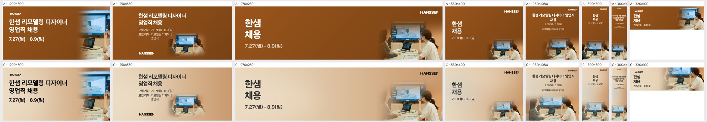
| 규격 | 점수 | 비중 | 크롭 | 배경 | 글자 | 메모 | AI 상자 | 그림 면적·주인공·채움·겹침 |
|---|---|---|---|---|---|---|---|---|
| 1200×600 | 2 | too_small | awkward | ok | ok | 오른쪽 띠에 모니터 끝과 노트북만 남고 두 인물이 모두 빠졌습니다. 키비주얼 폭을 40% 이상으로 넓히고 두 여성과 화면이 함께 들어오도록 크롭 기준점을 인물 쪽으로 옮겨야 합니다. | rule | 14% · 29% · 42% · 0% · 얼굴 잘림 1 |
| 1250×560 | 3 | too_small | ok | flat | ok | 사진이 가운데 아래에 작은 비네트로 떠 있어 오른쪽 지면이 비어 보입니다. 사진을 오른쪽 끝까지 붙이고 높이를 꽉 채우며, '모집 직무' 줄바꿈이 사진 쪽으로 밀리지 않게 텍스트 폭을 정리해야 합니다. | rule | 9% · 17% · 28% · 0% · 얼굴 잘림 1 |
| 970×250 | 4 | ok | ok | ok | ok | 두 인물과 화면 크롭은 좋습니다. 다만 '한샘 채용'만 남아 직무가 빠졌으니 '리모델링 디자이너 영업직' 한 줄을 날짜 위에 추가해야 합니다. | rule | 5% · 26% · 32% · 0% |
| 580×400 | 4 | ok | ok | ok | ok | 구성은 안정적입니다. 사진을 조금 키워 왼쪽 인물의 어깨가 하단 경계에서 덜 잘리게 하고, 직무명 한 줄을 추가하면 됩니다. | rule | 4% · 15% · 22% · 0% |
| 1080×1080 | 3 | ok | ok | ok | ok | 헤드라인이 '채용' 한 단어만 둘째 줄로 떨어지고, 날짜와 직무 글자가 정사각 대비 너무 작습니다. '한샘 리모델링 디자이너 / 영업직 채용'으로 끊고 날짜를 1.5배 키워야 합니다. | free | 51% · 37% · 51% · 0% |
| 300×600 | 3 | ok | ok | flat | ok | 상단 텍스트가 작고 그 아래 중간 지면이 비어 있습니다. 헤드라인을 키워 중단까지 내리고, 사진은 두 인물 얼굴이 모두 들어오도록 가로 크롭을 확인해야 합니다. | rule | 19% · 29% · 35% · 0% |
| 300×1050 | 2 | too_small | ok | flat | low_contrast | 본문 글자가 너무 작아 읽히지 않고 세로 지면 대부분이 비어 있습니다. 헤드라인을 2~3배 키우고 사진 높이를 전체의 40% 이상으로 늘려야 합니다. | rule | 16% · 25% · 40% · 0% |
| 320×100 | 3 | ok | ok | ok | ok | 오른쪽 사진에 화면과 오른쪽 인물만 겨우 보이고 날짜 글자가 작습니다. 크롭을 인물 중심으로 옮기고 날짜를 굵게 키워야 합니다. | free | 62% · 63% · 72% · 0% |
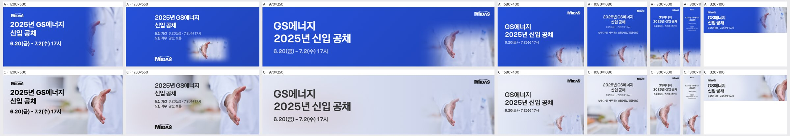
| 규격 | 점수 | 비중 | 크롭 | 배경 | 글자 | 메모 | AI 상자 | 그림 면적·주인공·채움·겹침 |
|---|---|---|---|---|---|---|---|---|
| 1200×600 | 4 | ok | ok | ok | ok | 손과 가운이 오른쪽에 잘 들어오고 텍스트와도 겹치지 않는다. 손을 화면 중앙 쪽으로 5~8% 당기면 오른쪽 끝 여백이 덜 빡빡해진다. | shrink | 70% · 31% · 48% · 0% |
| 1250×560 | 4 | ok | ok | ok | ok | 모집기간 줄 끝과 손끝 사이가 가깝다. 텍스트 블록을 왼쪽으로 20~30px 옮겨 간격을 확보하고, 왼쪽 하단 로고 주변의 빈 회색은 원본 블러를 조금 더 살려 채운다. | shrink | 70% · 33% · 45% · 0% |
| 970×250 | 3 | too_small | ok | flat | ok | 가로가 긴 지면에서 손이 오른쪽 끝에 작게 몰려 있다. 중앙부가 단색처럼 비어 보이므로 키비주얼을 1.2배 키우고 왼쪽으로 당겨 손을 지면 2/3 지점에 둔다. | rule | 5% · 12% · 27% · 0% |
| 580×400 | 3 | too_small | awkward | ok | ok | 손이 오른쪽 아래 모서리로 밀려 손끝이 하단에 닿을 듯하다. 이미지를 위로 10~15% 올리고 조금 키워 손이 우측 중단에 오도록 한다. | rule | 4% · 8% · 23% · 0% |
| 1080×1080 | 3 | ok | awkward | seam | ok | 상단 단색 영역과 하단 사진의 경계가 수평선처럼 드러나고, 손이 하단에 바짝 붙어 있다. 그라데이션 전환 구간을 2배로 늘리고 이미지를 위로 올려 손 아래 여백을 확보한다. 상단 텍스트도 한 단계 키운다. | shrink | 52% · 22% · 42% · 0% |
| 300×600 | 4 | ok | ok | ok | ok | 구성은 안정적이다. 회색 텍스트를 더 진한 남색이나 검정으로 바꿔 작은 화면에서의 대비를 높인다. | ok | 60% · 42% · 55% · 0% |
| 300×1050 | 2 | too_small | awkward | flat | low_contrast | 텍스트가 너무 작고 연한 회색이라 읽히지 않는다. 세로 중간이 비어 있고 손은 하단에 작게만 남는다. 제목을 최소 2배로 키우고 진한 색으로 바꾸고, 이미지를 세로 하단 40%까지 확대해 채운다. | ok | 45% · 25% · 40% · 0% |
| 320×100 | 3 | ok | awkward | ok | low_contrast | 손이 오른쪽 끝에서 손가락만 걸려 어색하다. 이미지를 왼쪽으로 당겨 손바닥 전체가 보이게 하고, 텍스트를 진한 색으로 바꿔 대비를 높인다. | ok | 40% · 36% · 52% · 0% |
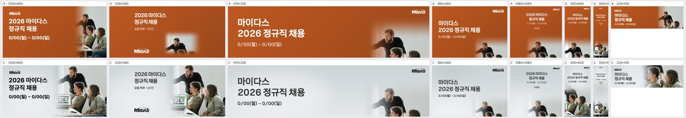
| 규격 | 점수 | 비중 | 크롭 | 배경 | 글자 | 메모 | AI 상자 | 그림 면적·주인공·채움·겹침 |
|---|---|---|---|---|---|---|---|---|
| 1200×600 | 4 | ok | ok | ok | ok | 세 인물과 노트북이 모두 살아 있고 회색 배경도 사진 벽과 자연스럽게 이어진다. 날짜 줄 끝과 노트북 화면 사이 간격이 좁으니 사진을 오른쪽으로 20~30px 밀어 여백을 확보할 것. | shrink | 53% · 30% · 45% · 0% |
| 1250×560 | 4 | ok | ok | ok | ok | 사진 배치는 좋지만 헤드라인이 지면에 비해 작고 왼쪽 380~460px 구간이 비어 보인다. 텍스트 블록을 왼쪽 여백 쪽으로 옮기고 헤드라인을 1.3배 키울 것. | shrink | 51% · 30% · 39% · 0% |
| 970×250 | 2 | too_small | face_cut | flat | ok | 사진이 오른쪽 아래 구석에만 걸려 수염 남성 상반신만 보이고, 앉은 남성 얼굴은 하단에서 잘린다. 중앙은 빈 회색 면으로 남는다. 사진을 높이에 맞춰 확대하고 세로 기준점을 위로 올려 세 인물의 얼굴이 모두 들어오게 다시 크롭할 것. | rule | 5% · 18% · 32% · 0% · 얼굴 잘림 1 |
| 580×400 | 2 | too_small | face_cut | flat | ok | 우하단 구석에 수염 남성 머리만 보이고 아래 인물들은 잘려 상황이 읽히지 않는다. 사진을 지면 오른쪽 절반 높이 전체로 키우고 인물 셋이 보이도록 크롭을 위로 올릴 것. | rule | 4% · 11% · 26% · 0% · 얼굴 잘림 1 |
| 1080×1080 | 2 | too_small | face_cut | flat | ok | 사진이 하단 띠에 몰려 인물 얼굴이 아래에서 잘리고, 상단 텍스트는 정사각 지면에 비해 너무 작아 가운데가 텅 빈다. 원본이 거의 정사각이니 사진을 지면 하단 2/3까지 키워 세 인물 전체를 넣고, 헤드라인을 2배 가까이 확대할 것. | rule | 7% · 18% · 29% · 0% · 얼굴 잘림 1 |
| 300×600 | 4 | ok | ok | ok | ok | 하단 사진에 세 인물이 모두 들어와 쓸 만하다. 다만 텍스트 블록이 작으니 헤드라인 크기를 키우고 날짜와의 간격을 늘려 위계를 분명히 할 것. | free | 63% · 51% · 64% · 0% |
| 300×1050 | 2 | too_small | ok | flat | low_contrast | 텍스트가 상단에 극소 크기로 박혀 읽히지 않고, 사진은 하단에 작게 놓여 중간 구간이 빈 회색으로 남는다. 헤드라인을 폭에 맞게 키우고, 사진을 높이 방향으로 확대해 지면 아래 절반 이상을 채울 것. | rule | 15% · 11% · 19% · 0% · 얼굴 잘림 2 |
| 320×100 | 3 | ok | subject_cut | ok | ok | 앉은 두 사람만 보이고 가리키는 수염 남성이 빠져 '함께 일하는' 장면의 핵심이 사라진다. 크롭 기준을 위로 올리거나 사진을 축소해 세 인물을 모두 담을 것. | free | 60% · 41% · 57% · 0% |
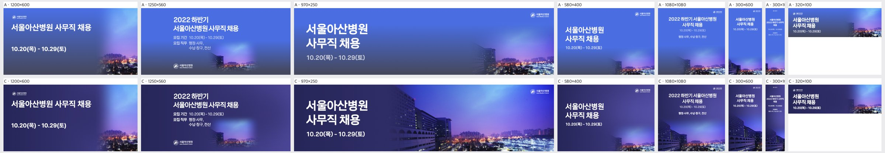
| 규격 | 점수 | 비중 | 크롭 | 배경 | 글자 | 메모 | AI 상자 | 그림 면적·주인공·채움·겹침 |
|---|---|---|---|---|---|---|---|---|
| 1200×600 | 3 | too_small | awkward | flat | ok | 사진이 우측 1/4에 하늘과 불빛 조각만 남아 지면 대부분이 단색 남색입니다. 사진을 좌측으로 확장해 병원 건물이 화면 중앙~우측 절반을 차지하게 하고, 그라데이션은 텍스트 뒤 40% 구간에만 남기세요. | rule | 15% · 8% · 22% · 0% |
| 1250×560 | 3 | too_small | awkward | flat | ok | 사진이 우하단 불빛 조각으로만 보여 남색 면이 비어 보입니다. 사진을 확대해 좌측 병원 건물이 텍스트 블록 오른쪽에 보이도록 배치하고, 남색 페이드 폭을 절반으로 줄이세요. | rule | 9% · 7% · 18% · 0% |
| 970×250 | 4 | ok | ok | ok | ok | 병원 건물과 야경이 잘 살아 있습니다. 다만 건물 왼쪽 끝이 날짜 줄에 가까우므로 사진을 오른쪽으로 20~30px 밀어 여백을 확보하세요. | shrink | 66% · 29% · 43% · 0% |
| 580×400 | 3 | ok | awkward | ok | ok | 건물이 어둡게 묻혀 하늘과 불빛만 읽힙니다. 사진 노출을 살짝 올리고, 건물 상단이 우측 중앙에 오도록 크롭 위치를 아래쪽으로 내리세요. | rule | 4% · 6% · 21% · 0% |
| 1080×1080 | 4 | ok | ok | ok | low_contrast | 날짜와 직무 줄이 연보라 소형 글자라 남색 위에서 약하게 읽힙니다. 흰색으로 바꾸고 크기를 1.3배 키우세요. | free | 51% · 23% · 40% · 0% |
| 300×600 | 4 | ok | ok | ok | ok | 구성은 안정적입니다. 날짜 글자만 한 단계 키워 가독성을 확보하세요. | ok | 60% · 60% · 73% · 0% |
| 300×1050 | 3 | ok | ok | ok | low_contrast | 제목·날짜·직무가 지나치게 작아 판독이 어렵습니다. 문구를 '서울아산병원 사무직 채용 + 날짜'로 줄이고 제목을 최소 22px 이상으로 키워 상단 1/3을 채우세요. | ok | 38% · 38% · 52% · 0% |
| 320×100 | 4 | ok | awkward | ok | ok | 로고가 너무 작아 식별되지 않습니다. 로고를 빼거나 키우고, 우측 사진 영역에 불빛이 더 보이도록 밝기를 올리세요. | rule | 18% · 21% · 40% · 0% |
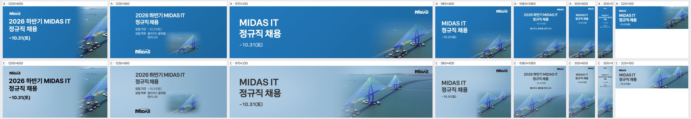
| 규격 | 점수 | 비중 | 크롭 | 배경 | 글자 | 메모 | AI 상자 | 그림 면적·주인공·채움·겹침 |
|---|---|---|---|---|---|---|---|---|
| 1200×600 | 3 | ok | subject_cut | ok | ok | 오른쪽 페이드 마스크가 주탑 왼쪽 케이블을 지우고 있습니다. 키비주얼을 왼쪽으로 10~15% 옮기거나 마스크 시작점을 바깥으로 밀어 주탑 하나를 온전히 보여 주세요. | rule | 16% · 27% · 39% · 0% |
| 1250×560 | 2 | too_small | ok | flat | ok | 다리가 오른쪽 아래 구석에 작게 박혀 지면 대부분이 단색 하늘색으로 비어 보입니다. 키비주얼을 화면 높이의 80% 이상으로 키워 우측 절반을 채우고 로고를 텍스트 블록 바로 아래로 붙이세요. | rule | 9% · 12% · 24% · 0% |
| 970×250 | 4 | ok | ok | ok | ok | 두 주탑과 뻗어 나가는 상판이 모두 보여 좋습니다. 그림과 텍스트 사이 페이드 경계만 조금 더 넓게 풀어 주세요. | shrink | 50% · 31% · 43% · 0% |
| 580×400 | 3 | too_small | ok | flat | ok | 주탑이 우하단에 작게 남아 상단 절반이 비어 보입니다. 키비주얼을 1.3배 확대해 주탑 꼭대기가 로고 높이까지 올라오게 하세요. | shrink | 29% · 19% · 31% · 0% |
| 1080×1080 | 3 | ok | ok | ok | ok | 정사각 지면에 비해 헤드라인이 작습니다. 타이틀을 1.5배 키우고 텍스트 블록을 위쪽 1/3에 꽉 채워 아래 다리 그림과 비중을 맞추세요. | shrink | 52% · 31% · 46% · 0% |
| 300×600 | 3 | ok | ok | ok | ok | 상단 텍스트 아래에 빈 띠가 큽니다. 헤드라인 크기를 키우고 키비주얼을 위로 올려 빈 하늘을 줄이세요. | ok | 60% · 35% · 45% · 0% |
| 300×1050 | 2 | ok | ok | flat | low_contrast | 본문이 깨알 크기라 읽히지 않습니다. 세로형 전용 최소 폰트 크기(타이틀 28px 이상)를 적용하고 중간 빈 구간을 텍스트로 채우세요. | ok | 50% · 35% · 48% · 0% |
| 320×100 | 3 | ok | ok | ok | ok | 작은 배너인데 텍스트가 세 줄이라 빽빽합니다. 'MIDAS IT 정규직 채용' 한 줄과 마감일만 남기고 글자를 키우세요. | free | 62% · 32% · 46% · 0% |
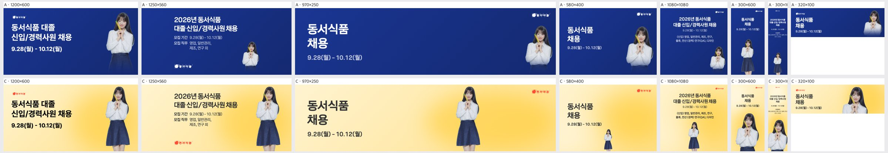
| 규격 | 점수 | 비중 | 크롭 | 배경 | 글자 | 메모 | AI 상자 | 그림 면적·주인공·채움·겹침 |
|---|---|---|---|---|---|---|---|---|
| 1200×600 | 4 | ok | ok | ok | ok | 오른쪽 인물은 무릎 위에서 잘려 안정적이지만 왼쪽 흰 영역이 넓으니 인물을 조금 키워 상반신 비중을 늘린다. | free | 30% · 10% · 24% · 0% |
| 1250×560 | 4 | ok | ok | ok | ok | 구도는 좋다. 하단 로고와 본문 블록 사이가 많이 비니 로고를 본문 아래로 붙여 정보 덩어리를 정리한다. | free | 31% · 8% · 26% · 0% |
| 970×250 | 3 | ok | ok | flat | ok | 인물이 중앙에 떠 있어 오른쪽 로고 사이가 휑하다. 인물을 오른쪽 1/4 지점까지 옮기고 허리 위로 크롭해 얼굴을 키운다. | free | 67% · 5% · 13% · 0% |
| 580×400 | 2 | too_small | ok | flat | ok | 전신이 날짜 아래에 작게 박혀 지면이 비어 보인다. 오른쪽 절반에 상반신 크롭으로 높이 꽉 차게 배치한다. | free | 34% · 1% · 10% · 0% |
| 1080×1080 | 2 | too_small | ok | flat | ok | 하단 중앙 전신이 너무 작아 양옆 노란 면이 비어 보인다. 텍스트 아래 남는 높이 전체를 쓰도록 허벅지 위 크롭으로 2배 이상 키운다. | free | 45% · 3% · 26% · 0% |
| 300×600 | 4 | ok | ok | ok | ok | 인물 크기와 텍스트 분리가 좋다. 상단 텍스트 블록과 인물 머리 사이 여백만 조금 줄인다. | ok | 54% · 42% · 51% · 0% |
| 300×1050 | 3 | ok | ok | ok | low_contrast | 상단 본문 글자가 너무 작고 촘촘해 안 읽힌다. 모집 직무 줄을 빼고 헤드라인·날짜 크기를 키워 세로 중간 여백을 활용한다. | ok | 50% · 20% · 38% · 0% |
| 320×100 | 4 | ok | ok | ok | ok | 얼굴 위주 크롭이 적절하다. '동서식품 채용'을 한 줄로 합쳐 글자 크기를 키운다. | free | 58% · 8% · 21% · 0% |
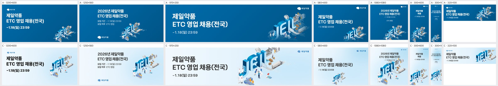
| 규격 | 점수 | 비중 | 크롭 | 배경 | 글자 | 메모 | AI 상자 | 그림 면적·주인공·채움·겹침 |
|---|---|---|---|---|---|---|---|---|
| 1200×600 | 4 | ok | ok | ok | ok | 키비주얼을 10%쯤 키우고 오른쪽 여백 중앙으로 옮겨 오른쪽 위 빈 공간을 줄일 것. | shrink | 36% · 18% · 34% · 0% |
| 1250×560 | 4 | ok | ok | ok | ok | 키비주얼을 약간 키워 세로 중앙에 맞추고, 왼쪽 아래 로고와의 시각 무게를 맞출 것. | shrink | 36% · 21% · 36% · 0% |
| 970×250 | 3 | too_big | subject_cut | ok | ok | 키비주얼 위쪽 공장·로고 원과 아래 실험실이 지면 위아래에서 잘리므로, 스케일을 20%쯤 줄여 전체가 들어오게 하고 우측 로고와 간격을 둘 것. | grow | 67% · 35% · 51% · 0% |
| 580×400 | 3 | too_small | ok | flat | ok | 키비주얼이 날짜 아래에 작게 붙어 오른쪽이 비어 보이므로, 오른쪽 하단에 1.5배 크기로 배치할 것. | free | 34% · 5% · 21% · 0% |
| 1080×1080 | 2 | too_big | ok | ok | overlap | 'ETC 영업'과 날짜 텍스트가 JEIL 글자 위에 겹쳐 안 읽히므로, 키비주얼을 하단 55% 영역 안으로 내리고 크기를 줄여 텍스트 블록과 분리할 것. | grow | 64% · 32% · 45% · 0% |
| 300×600 | 3 | ok | subject_cut | ok | ok | 키비주얼 왼쪽과 아래가 지면 밖으로 잘리므로, 폭에 맞게 축소해 하단 안쪽에 온전히 넣을 것. | shrink | 44% · 15% · 23% · 0% |
| 300×1050 | 2 | too_small | subject_cut | flat | low_contrast | 텍스트가 너무 작아 읽히지 않고 중간이 텅 비므로, 헤드라인을 2~3배 키워 상단 1/3을 채우고 키비주얼은 폭에 맞춰 키운 뒤 잘리지 않게 하단에 둘 것. | free | 55% · 19% · 30% · 0% |
| 320×100 | 3 | ok | subject_cut | ok | ok | 키비주얼 아래쪽이 잘려 JEIL 글자만 남으므로, 스케일을 줄여 JEIL과 트럭이 함께 보이게 할 것. | grow | 39% · 18% · 38% · 0% |
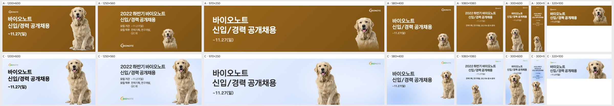
| 규격 | 점수 | 비중 | 크롭 | 배경 | 글자 | 메모 | AI 상자 | 그림 면적·주인공·채움·겹침 |
|---|---|---|---|---|---|---|---|---|
| 1200×600 | 4 | ok | ok | ok | ok | 앞발이 하단에 거의 붙어 답답하니 강아지를 5~8% 축소해 바닥 여백을 확보하고, 오렌지 로고는 연한 배경에서 약하므로 채도를 올리거나 한 단계 키울 것. | free | 36% · 23% · 38% · 0% |
| 1250×560 | 4 | ok | ok | ok | ok | 앞발이 하단에서 잘리니 강아지를 살짝 줄여 발끝까지 넣고, 텍스트 블록과 강아지 사이 간격을 조금 더 벌릴 것. | free | 31% · 21% · 39% · 0% |
| 970×250 | 3 | ok | ok | flat | ok | 강아지가 중앙 오른쪽에 떠 있어 로고와의 사이가 비어 보이니, 강아지를 오른쪽으로 옮겨 로고 아래쪽에 붙이고 타이틀과의 간격을 넓힐 것. | grow | 34% · 12% · 26% · 0% |
| 580×400 | 3 | too_small | subject_cut | ok | ok | 강아지 몸이 오른쪽 가장자리에서 잘리고 크기도 작으니, 15~20% 키워 화면 안쪽으로 들이고 머리를 로고 아래 시선선에 맞출 것. | shrink | 19% · 13% · 29% · 0% |
| 1080×1080 | 2 | too_small | ok | flat | ok | 강아지가 하단 중앙에 작게 놓여 지면 절반이 비어 보이니, 화면 높이의 55~60%까지 키워 하단에 앉히고 텍스트 블록과 맞물리게 배치할 것. | free | 45% · 8% · 31% · 0% |
| 300×600 | 4 | ok | ok | ok | ok | 강아지 머리가 마감일 텍스트 바로 아래까지 올라와 붙어 보이니, 강아지를 10px 정도 내려 텍스트와의 여백을 확보할 것. | grow | 64% · 24% · 36% · 0% |
| 300×1050 | 3 | ok | ok | flat | ok | 텍스트가 지면 대비 지나치게 작아 판독이 어렵고 중간이 비니, 타이틀을 1.5배 키우고 강아지를 위로 올려 세로 흐름을 채울 것. | grow | 54% · 22% · 40% · 0% |
| 320×100 | 4 | ok | ok | ok | ok | 강아지 머리가 우측 상단에 약간 바짝 붙으니 4~6px 내리고, 마감일 텍스트 크기를 조금 키울 것. | free | 43% · 13% · 33% · 0% |
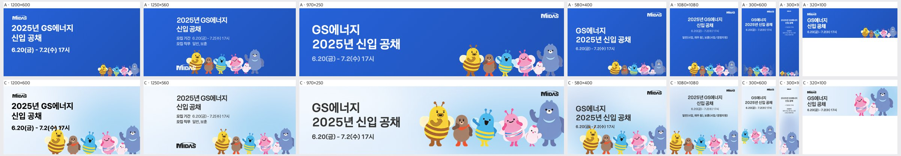
| 규격 | 점수 | 비중 | 크롭 | 배경 | 글자 | 메모 | AI 상자 | 그림 면적·주인공·채움·겹침 |
|---|---|---|---|---|---|---|---|---|
| 1200×600 | 2 | ok | subject_cut | ok | overlap | 노란 벌의 더듬이와 머리가 날짜 '7.2(수) 17시'를 덮으니 캐릭터 떼를 오른쪽 아래로 약 60px 내리고 축소하거나 날짜 블록을 위로 올려 겹침을 없애고, 하단에서 잘린 다리가 보이게 바닥 여백을 확보할 것 | grow | 33% · 30% · 44% · 0% |
| 1250×560 | 4 | ok | subject_cut | ok | ok | 캐릭터 다리가 하단에서 잘리니 캐릭터 그룹을 10%가량 축소하거나 위로 올려 발끝까지 보이게 하고, 로고와 캐릭터 사이 간격을 조금 더 벌릴 것 | ok | 25% · 21% · 32% · 0% |
| 970×250 | 4 | ok | ok | ok | ok | 캐릭터가 오른쪽 끝 곰에서 바짝 붙어 잘릴 듯하니 그룹을 왼쪽으로 20px 옮겨 우측 여백을 주고, 왼쪽 텍스트 영역 배경을 아주 연한 블루로 받쳐 흰 빈 면처럼 보이지 않게 할 것 | free | 55% · 36% · 51% · 0% |
| 580×400 | 2 | too_big | subject_cut | ok | overlap | 날짜 '6.20(금)-7.2(수)'가 벌 더듬이·머리와 겹치니 캐릭터 떼를 15~20% 축소해 하단에 붙이고 날짜 아래로 최소 30px 안전 여백을 둘 것 | grow | 47% · 21% · 36% · 0% |
| 1080×1080 | 3 | too_small | subject_cut | flat | ok | 텍스트와 캐릭터 사이 중앙이 비어 보이니 캐릭터 그룹을 1.3배 키워 중앙 하단으로 올리고 다리 잘림을 없애며, 헤드라인 크기도 키워 위아래 비중을 맞출 것 | ok | 39% · 21% · 41% · 0% |
| 300×600 | 3 | too_small | subject_cut | flat | ok | 캐릭터가 하단에 작게 몰려 중간이 비니 그룹을 2단으로 재배치하거나 2~3마리만 크게 써서 세로 지면을 채우고, 헤드라인 글자를 키울 것 | free | 63% · 27% · 40% · 0% |
| 300×1050 | 2 | too_small | subject_cut | flat | ok | 본문 글자가 너무 작아 읽기 어렵고 세로 지면 대부분이 비었으니 헤드라인을 2배 이상 키우고, 캐릭터를 세로로 쌓거나 대표 캐릭터를 크게 배치해 중간 공백을 채울 것 | ok | 36% · 25% · 40% · 0% |
| 320×100 | 3 | ok | awkward | ok | ok | 핑크 벌·병아리·곰만 반쯤 잘려 보여 떼가 어색하게 끊기니 전체 그룹을 작게 넣거나 벌 1~2마리만 온전히 보이게 크롭하고, 곰 오른쪽 잘림을 없앨 것 | free | 53% · 18% · 34% · 0% |
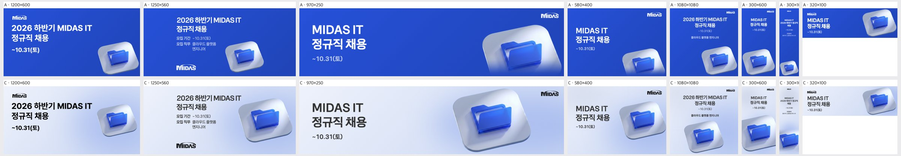
| 규격 | 점수 | 비중 | 크롭 | 배경 | 글자 | 메모 | AI 상자 | 그림 면적·주인공·채움·겹침 |
|---|---|---|---|---|---|---|---|---|
| 1200×600 | 4 | ok | ok | ok | ok | 흰 타일과 연보라 배경의 명도 차가 작아 윤곽이 묻히므로, 타일 아래 그림자를 조금 진하게 깔아 분리감을 주면 그대로 납품 가능. | shrink | 25% · 14% · 25% · 0% |
| 1250×560 | 4 | ok | ok | ok | ok | 타일 오른쪽이 프레임 끝에 바짝 붙어 있으니 KV를 왼쪽으로 20~30px 옮겨 우측 여백을 확보할 것. | shrink | 30% · 23% · 35% · 1.7% |
| 970×250 | 3 | too_big | awkward | ok | ok | 타일 하단이 프레임에 잘리고 우상단 로고와 간격이 좁으므로, KV를 85% 정도로 줄여 타일 전체가 보이게 하고 로고와 여백을 띄울 것. | grow | 50% · 27% · 39% · 0% |
| 580×400 | 4 | ok | ok | ok | ok | 타일 오른쪽 끝이 살짝 잘리니 KV를 약간 왼쪽으로 옮기거나 5% 줄여 모서리 라운드가 온전히 보이게 할 것. | free | 48% · 27% · 39% · 0% |
| 1080×1080 | 4 | ok | ok | ok | ok | 하단 직무 문구가 지면 대비 너무 작으니 한 단계 키우고, KV를 조금 올려 하단 잘림을 줄일 것. | free | 51% · 28% · 43% · 0% |
| 300×600 | 3 | ok | awkward | ok | ok | 타일이 하단과 우측에서 함께 잘려 조각처럼 보이니, KV를 줄여 가로 중앙에 두고 하단 여백 안에 타일 전체를 넣을 것. | grow | 58% · 17% · 26% · 0% |
| 300×1050 | 2 | too_small | subject_cut | flat | low_contrast | 본문이 판독 불가 수준으로 작고 KV는 하단에서 반쯤 잘려 중간이 텅 비어 있으니, 헤드라인을 2배 이상 키우고 KV를 세로 중앙~하단에 온전히 배치할 것. | ok | 36% · 20% · 32% · 0% |
| 320×100 | 4 | ok | ok | ok | ok | 타일 우하단이 잘리니 KV를 10% 줄여 높이 안에 들어오게 하고, 텍스트와의 간격을 유지할 것. | rule | 40% · 34% · 48% · 0% |
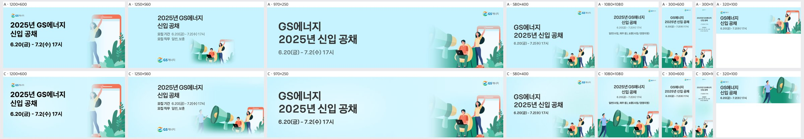
| 규격 | 점수 | 비중 | 크롭 | 배경 | 글자 | 메모 | AI 상자 | 그림 면적·주인공·채움·겹침 |
|---|---|---|---|---|---|---|---|---|
| 1200×600 | 3 | ok | awkward | ok | ok | 오른쪽에 폰과 손 든 여성 일부만 잘려 남았으니, 크롭 중심을 왼쪽으로 옮겨 메가폰과 앉은 남성까지 함께 보이게 하세요. | rule | 14% · 11% · 28% · 0% |
| 1250×560 | 4 | ok | ok | ok | ok | 걷는 남성이 흐릿하게 페이드돼 '모집 직무' 줄 가까이 붙어 있으니, 그림을 오른쪽으로 약간 옮기거나 페이드를 정리해 텍스트와 띄우세요. | shrink | 52% · 24% · 36% · 0% |
| 970×250 | 4 | ok | ok | ok | ok | 메가폰 앞쪽이 왼쪽 페이드에 묻혀 잘려 보이니, 페이드 시작점을 왼쪽으로 조금 밀어 메가폰 형태가 온전히 읽히게 하세요. | rule | 8% · 10% · 26% · 0% |
| 580×400 | 3 | too_small | ok | flat | ok | 그림이 오른쪽 아래 구석에 작게 몰려 위쪽 하늘이 비어 보이니, 키비주얼을 120~130%로 키워 날짜 줄 아래까지 차오르게 하세요. | rule | 6% · 0% · 16% · 0% |
| 1080×1080 | 4 | ok | ok | ok | ok | 인물 네 명과 메가폰이 모두 살아 있어 좋지만, 상단 로고가 너무 작으니 지금의 1.5배 정도로 키우세요. | grow | 60% · 43% · 63% · 0% |
| 300×600 | 4 | ok | ok | ok | ok | 하단 그림이 메가폰 반쪽과 인물로 잘 정리됐으니, 날짜 글자 크기만 한 단계 키워 가독성을 확보하세요. | rule | 21% · 13% · 26% · 0% |
| 300×1050 | 2 | too_small | ok | flat | low_contrast | 헤드라인과 모집 정보가 깨알처럼 작고 중간이 텅 비었으니, 타이틀을 폭에 맞게 2배 이상 키우고 그림을 세로 하단 40%까지 확대하세요. | ok | 32% · 31% · 46% · 0% |
| 320×100 | 4 | ok | ok | ok | ok | 메가폰 끝이 오른쪽 가장자리에서 잘리니, 크롭을 왼쪽으로 조금 당겨 메가폰 입구가 프레임 안에 들어오게 하세요. | free | 53% · 31% · 47% · 0% |
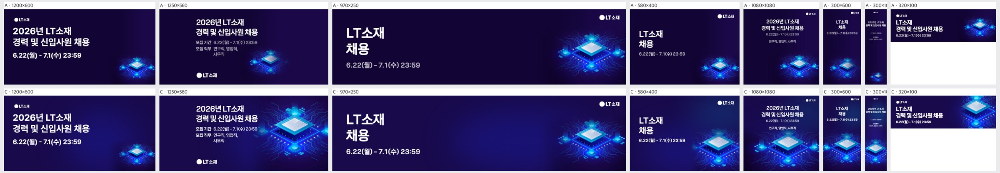
| 규격 | 점수 | 비중 | 크롭 | 배경 | 글자 | 메모 | AI 상자 | 그림 면적·주인공·채움·겹침 |
|---|---|---|---|---|---|---|---|---|
| 1200×600 | 3 | too_small | ok | ok | ok | 칩이 오른쪽 아래 구석에 작게 붙어 있어 우측 절반이 비어 보입니다. 칩을 높이의 약 70%까지 키우고 우측 중앙으로 올려 회로선이 화면 오른쪽 끝까지 뻗게 하세요. | rule | 7% · 5% · 26% · 0% |
| 1250×560 | 4 | ok | ok | ok | ok | 칩 비중과 배치는 좋습니다. 왼쪽 회로선이 '23:59' 끝자리 바로 옆까지 와 있으니, 칩을 오른쪽으로 40px 정도 옮기거나 텍스트 쪽 회로선을 페이드 처리해 여백을 확보하세요. | shrink | 49% · 22% · 40% · 0% |
| 970×250 | 4 | ok | ok | ok | ok | 쓸 만합니다. 가운데가 비어 보이니 칩을 10~15% 키우고 왼쪽으로 조금 당겨 회로선이 중앙 여백까지 이어지게 하세요. | rule | 12% · 8% · 16% · 0% |
| 580×400 | 4 | ok | ok | ok | ok | 칩 하단 회로가 아래 끝에서 잘려 답답합니다. 칩을 20px 정도 올리고 살짝 키워 우측 하단 여백을 균형 있게 맞추세요. | shrink | 28% · 14% · 22% · 0% |
| 1080×1080 | 4 | ok | ok | ok | ok | 칩 상단 회로선이 '연구직, 영업직, 사무직' 줄 바로 아래에 붙어 있습니다. 칩을 하단으로 30~40px 내리거나 텍스트 블록과의 간격을 넓히세요. | ok | 62% · 20% · 36% · 0% |
| 300×600 | 4 | ok | ok | ok | ok | 구성은 양호합니다. 칩과 날짜 텍스트 사이 빈 공간이 크니 칩을 약간 위로 올려 상하 여백을 고르게 맞추세요. | ok | 60% · 24% · 33% · 0% |
| 300×1050 | 3 | ok | ok | ok | ok | 헤드라인과 일정 글자가 지나치게 작아 실제 노출 크기에서 읽기 어렵습니다. 텍스트를 1.8~2배 키워 상단 1/3을 채우고, 칩은 중하단에 크게 배치하세요. | ok | 50% · 23% · 36% · 0% |
| 320×100 | 4 | ok | ok | ok | ok | 양호합니다. 칩 윗부분이 상단 가장자리에 가까우니 칩을 5~8px 내리고 살짝 축소해 숨 쉴 여백을 주세요. | free | 37% · 26% · 47% · 0% |
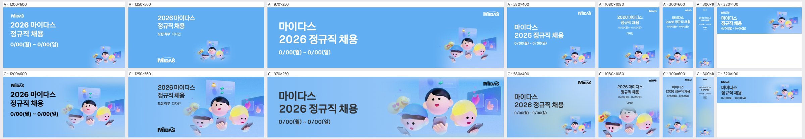
| 규격 | 점수 | 비중 | 크롭 | 배경 | 글자 | 메모 | AI 상자 | 그림 면적·주인공·채움·겹침 |
|---|---|---|---|---|---|---|---|---|
| 1200×600 | 4 | ok | ok | ok | ok | 파란 모자 캐릭터 왼쪽 끝이 날짜 줄과 너무 가까우니 키비주얼을 오른쪽으로 20~30px 옮겨 글자와의 여백을 확보할 것. | shrink | 56% · 21% · 36% · 0% |
| 1250×560 | 4 | ok | subject_cut | ok | ok | 하단에서 캐릭터 손과 폰이 잘리고 파란 모자 얼굴이 바닥에 걸리니, 키비주얼을 10% 축소하거나 위로 올려 세 얼굴과 폰이 모두 들어오게 할 것. | grow | 67% · 32% · 40% · 1.8% |
| 970×250 | 4 | ok | subject_cut | ok | ok | 폰을 쥔 손이 하단에서 잘리고 MIDAS 로고가 금발 캐릭터 머리 위 카드와 붙어 있으니, 키비주얼을 살짝 줄여 아래로 내리고 로고 주변 여백을 확보할 것. | free | 55% · 30% · 45% · 0% |
| 580×400 | 3 | too_small | ok | flat | ok | 키비주얼이 오른쪽 아래 구석에 작게 남아 위쪽 절반이 비어 보이니, 키비주얼을 1.6배가량 키워 오른쪽 하단을 채우고 텍스트 블록과 높이를 맞출 것. | rule | 6% · 13% · 27% · 0% · 얼굴 잘림 2 |
| 1080×1080 | 3 | ok | face_cut | ok | ok | 하단 크롭으로 파란 모자와 금발 캐릭터 얼굴 아래가 잘리니, 키비주얼을 위로 올리고 상단 텍스트 간격을 줄여 세 얼굴 전체와 폰까지 보이게 할 것. | shrink | 52% · 47% · 58% · 0% |
| 300×600 | 3 | too_small | ok | seam | ok | 키비주얼이 하단에 작게 놓여 중간이 비고 세로로 밝은 띠가 경계처럼 보이니, 키비주얼을 폭 가득 키워 중하단에 배치하고 배경 그라데이션을 고르게 펼칠 것. | rule | 0% · 20% · 32% · 0% |
| 300×1050 | 2 | too_small | ok | flat | low_contrast | 글자와 키비주얼이 모두 너무 작아 중간 600px가량이 비어 있으니, 타이틀을 2배로 키우고 키비주얼을 폭 가득(가운데 정렬 확대)으로 키워 하단 1/3을 채울 것. | rule | 0% · 4% · 13% · 0% |
| 320×100 | 4 | ok | ok | ok | ok | 날짜 글자가 매우 작으니 날짜를 한 단계 키우고, 키비주얼을 오른쪽 끝에 붙여 텍스트와 간격을 둘 것. | rule | 10% · 5% · 21% · 0% · 얼굴 잘림 2 |
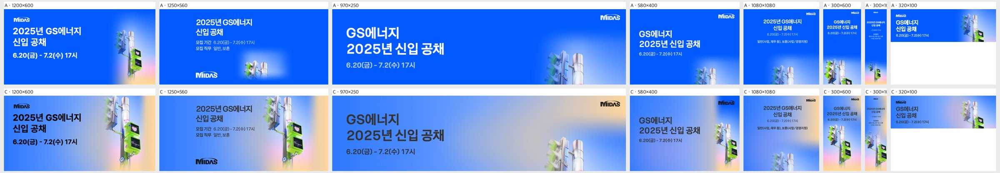
| 규격 | 점수 | 비중 | 크롭 | 배경 | 글자 | 메모 | AI 상자 | 그림 면적·주인공·채움·겹침 |
|---|---|---|---|---|---|---|---|---|
| 1200×600 | 4 | ok | ok | ok | ok | 오른쪽 상단 신호등 머리가 프레임에 붙어 잘려 보이니 KV를 5~8% 아래로 내려 위쪽 여백을 확보하고, 짙은 남색 글자는 밝은 하늘색 구간에서만 쓰도록 텍스트 영역 배경을 한 톤 밝게 고정할 것 | shrink | 32% · 25% · 42% · 0% |
| 1250×560 | 4 | ok | ok | seam | low_contrast | 오른쪽 끝 피치색 띠가 세로 경계처럼 끊겨 보이니 그라데이션 폭을 넓혀 자연스럽게 풀고, 회색 본문(모집기간·직무)은 진한 남색이나 흰색으로 바꿔 대비를 높일 것 | shrink | 38% · 25% · 37% · 0% |
| 970×250 | 3 | ok | awkward | seam | low_contrast | 신호등 윗부분과 기둥만 보이고 핵심인 초록 보행 신호기가 빠졌으니 KV를 위로 올려 보행 신호기가 들어오게 크롭하고, 로고 뒤 피치색 띠가 경계로 보이니 그라데이션을 넓게 섞고 회색 타이틀은 흰색으로 바꿀 것 | rule | 5% · 15% · 30% · 0% |
| 580×400 | 3 | ok | subject_cut | ok | low_contrast | 보행 신호기가 오른쪽 끝에서 잘리고 MIDAS 로고가 신호등 머리와 겹치니 KV를 왼쪽으로 10%가량 당기고 로고는 좌상단으로 옮길 것 | free | 26% · 14% · 29% · 0% |
| 1080×1080 | 2 | too_small | awkward | flat | low_contrast | 하단에 신호등 윗조각만 작게 걸려 지면 중앙이 비어 보이니 KV를 화면 높이 50% 이상으로 키워 보행 신호기까지 보이게 하고, 작은 회색 글자는 흰색·굵게 키울 것 | rule | 7% · 8% · 28% · 0% |
| 300×600 | 4 | ok | ok | ok | low_contrast | KV 배치는 좋으나 회색 소형 텍스트가 파란 배경에서 흐리게 읽히니 흰색으로 바꾸고 기간 글자를 1~2pt 키울 것 | grow | 90% · 38% · 51% · 0% |
| 300×1050 | 3 | ok | ok | flat | low_contrast | 상단 텍스트가 너무 작고 회색이라 거의 안 읽히며 중간이 비어 있으니 타이틀을 최소 2배로 키워 흰색으로 바꾸고 KV를 위로 올려 빈 구간을 채울 것 | free | 57% · 35% · 51% · 0% |
| 320×100 | 3 | ok | ok | ok | low_contrast | 작은 지면에서 회색 날짜가 묻히니 타이틀·날짜를 흰색으로 바꾸고, 신호등은 보행 신호기 중심으로 살짝 확대할 것 | rule | 18% · 14% · 30% · 0% |
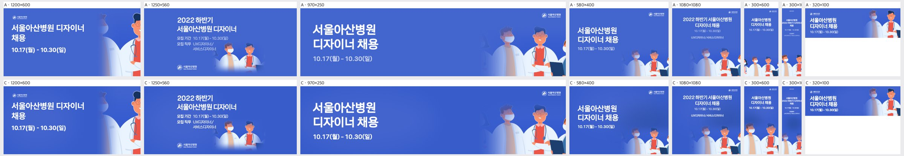
| 규격 | 점수 | 비중 | 크롭 | 배경 | 글자 | 메모 | AI 상자 | 그림 면적·주인공·채움·겹침 |
|---|---|---|---|---|---|---|---|---|
| 1200×600 | 2 | too_small | face_cut | flat | ok | 오른쪽 끝에 의사 얼굴이 반쯤 잘려 붙어 있다. 키비주얼을 화면 오른쪽 40~45% 폭으로 키우고, 안경 쓴 의사와 클립보드 의사 두 명이 얼굴까지 온전히 들어오도록 크롭을 왼쪽으로 옮겨야 한다. | rule | 14% · 30% · 44% · 0% · 얼굴 잘림 1 |
| 1250×560 | 2 | too_small | awkward | seam | ok | 작게 줄인 두 의사 조각이 페이드 처리돼 지면 위에 떠 있고, 오른쪽 절반이 비어 있다. 인물 그룹을 오른쪽 하단에 높이 80% 이상으로 키워 배치하고, 페이드 경계 대신 배경 블루와 이어 붙여야 한다. | rule | 9% · 17% · 28% · 0% · 얼굴 잘림 3 |
| 970×250 | 4 | ok | ok | ok | ok | 인물 두 명이 크게 들어와 좋다. 다만 오른쪽 끝에 잘린 세 번째 인물 조각은 크롭을 조정해 빼거나 완전히 넣는다. | rule | 8% · 25% · 40% · 0% · 얼굴 잘림 2 |
| 580×400 | 3 | too_small | awkward | ok | ok | 인물이 우하단 구석에 작게 몰려 있고 일부가 잘린다. 인물 그룹을 1.3~1.5배 키워 우측 하단을 채우고, 중앙 두 인물의 얼굴이 온전히 보이게 크롭한다. | rule | 6% · 11% · 27% · 0% · 얼굴 잘림 2 |
| 1080×1080 | 3 | too_small | subject_cut | flat | ok | 인물이 하단 띠로 잘려 가슴 위만 작게 보이고 중앙이 비어 있다. 인물 그룹을 하단 50% 높이까지 키우고 텍스트 블록을 그 위로 붙여 여백을 줄인다. | rule | 10% · 19% · 36% · 0% · 얼굴 잘림 2 |
| 300×600 | 3 | ok | awkward | flat | ok | 하단 인물들이 좌우로 잘려 조각처럼 보인다. 한두 명만 크게 골라 하단 중앙에 배치하고, 텍스트와 인물 사이의 빈 공간을 줄인다. | ok | 50% · 42% · 55% · 0% |
| 300×1050 | 2 | too_small | awkward | flat | low_contrast | 텍스트가 너무 작아 읽히지 않고 중앙이 길게 비어 있다. 제목을 최소 22~24px로 키우고, 인물을 세로 하단 40%까지 확대해 빈 공간을 채운다. | rule | 17% · 35% · 50% · 0% |
| 320×100 | 3 | ok | face_cut | ok | ok | 오른쪽 끝 인물 얼굴이 잘린다. 크롭을 왼쪽으로 옮겨 마스크 쓴 의사와 안경 쓴 의사 두 명의 얼굴이 완전히 보이게 한다. | rule | 18% · 31% · 51% · 0% · 얼굴 잘림 1 |